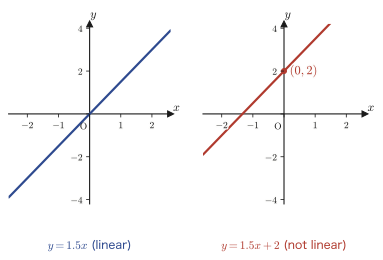

Chapter 11Linear Maps
In Chapter 10 we studied vector spaces (linear spaces), which are “sets in which, as with vectors, sums and scalar multiples can be formed,” and acquired the tools of linear independence, basis, dimension, and subspaces. In this chapter we take our viewpoint one step further. Instead of looking at a single vector space, we investigate correspondences that carry one vector space to another while preserving its structure—these are called linear maps. A linear map is an abstraction of the transformation $\bm y=A\bm x$ of vectors by a matrix $A$; conversely, as we will see at the end of this chapter, every linear map from $\R^n$ to $\R^m$ can always be written in terms of exactly one matrix (the representation matrix). The abstract story of “correspondences between vector spaces” reduces, in the end, to the concrete computation of “just fixing a single matrix”—this going back and forth is the real joy of linear algebra.
In this chapter we first introduce carefully the terms surjective and injective, which are defined for maps in general (these ideas hardly appear in high school mathematics, so we start from concrete examples and figures). Next we define a linear map by the condition of “preserving sums and scalar multiples” and verify its basic properties. The central tools for studying a linear map are two subspaces, the image ($\mathrm{Im}\,f$) and the kernel ($\mathrm{Ker}\,f$). $\mathrm{Im}\,f$ represents “the range that the map actually reaches,” and $\mathrm{Ker}\,f$ represents “the part that gets crushed to $0$”; the dimensions of these two satisfy the beautiful relation $\dim(\mathrm{Im}\,f)+\dim(\mathrm{Ker}\,f)=n$ (the dimension theorem, also known as the rank–nullity theorem). Finally, we show that a linear map is completely determined by the images of the standard basis alone (the representation matrix), and that composing two linear maps yields the product of their representation matrices. The “linear transformations” treated in the next chapter (eigenvalues and diagonalization) are nothing other than the linear maps of this chapter in the case $m=n$, and $\mathrm{Im}\,f$, $\mathrm{Ker}\,f$, and the representation matrices of this chapter serve directly as their foundation.
(A note on notation: In Chapter 10, to emphasize that the elements of a vector space are not necessarily numerical vectors, we wrote them without arrows or boldface. In this chapter, however, the concrete examples of linear maps are mainly transformations from $\R^n$ to $\R^m$, so, following Chapter 9, we denote column vectors in boldface, $\bm x,\bm y$. The next chapter (Chapter 12) carries over this notation.)
- Basic vocabulary of maps: domain and codomain; the definitions of surjective ($\forall y\in Y',\exists x\in X,\ f(x)=y$), injective ($f(x_1)=f(x_2)\Rightarrow x_1=x_2$), and bijective maps; and figures showing the three kinds of correspondence
- Definition of a linear map: $f(\bm x+\bm y)=f(\bm x)+f(\bm y)$, $f(\lambda\bm x)=\lambda f(\bm x)$ (a generalization of the property of a “line through the origin”); the equivalent single condition $f(\lambda\bm x+\mu\bm y)=\lambda f(\bm x)+\mu f(\bm y)$; and the linear transformation for the case $m=n$
- Basic properties of linear maps: $f(\bm 0_n)=\bm 0_m$, and the formula for the image of a linear combination, $f(c_1\bm x_1+\cdots+c_n\bm x_n)=c_1f(\bm x_1)+\cdots+c_nf(\bm x_n)$
- Definition of the image $\mathrm{Im}\,f=f(V)$, and a proof that it is a subspace of $V'$
- Definition of the kernel $\mathrm{Ker}\,f=f^{-1}(\bm 0')$, and a proof that it is a subspace of $V$
- The dimension theorem $\dim(\mathrm{Im}\,f)+\dim(\mathrm{Ker}\,f)=n$, and how to decide injectivity and surjectivity from the dimensions of $\mathrm{Im}\,f,\mathrm{Ker}\,f$
- The fact that arranging the images $f(\bm e_1),\ldots,f(\bm e_n)$ of the standard basis $\bm e_1,\ldots,\bm e_n$ side by side gives the representation matrix $A$: $\bm y=A\bm x$
- A proof that the representation matrix of the composite map $g\circ f$ is the product $BA$ of the representation matrices $A,B$ of $f,g$
Source notes: Yasuhide Mochizuki, Mathematics Notes: Linear Algebra, pp. 25–28.
11.1 Basic Vocabulary of Maps: Surjective, Injective, and Bijective Maps
A map (also called a mapping) is a rule that assigns to each element of a set $X$ exactly one element of a set $Y'$. We write $f:X\to Y'$ to say that $f$ is such a rule. The “function” $y=f(x)$ that you learned about in high school mathematics is nothing other than a map in the case where $X,Y'$ are both the set $\R$ of all real numbers (or subsets of it). When we consider a map, we distinguish between the set $X$ where the correspondence starts (the domain) and the set $Y'$ to which the corresponding elements belong (the codomain). What we should note here is that the codomain $Y'$ is merely “a set that contains all the images under $f$,” and that not every element of $Y'$ necessarily appears as an image of $f$. For example, even if we take $Y'=\R$, the only values that appear as images of $f(x)=x^2$ are real numbers that are $0$ or greater. To distinguish this question of “whether everything in the codomain actually appears as an image,” we introduce two terms: surjective and injective.
Definition 11.1: Surjective map
Let $f:X\to Y'$ be a map. If, for every element $y$ of the codomain $Y'$, there exists at least one element $x$ of $X$ such that $f(x)=y$, that is, if
\begin{equation} \forall y\in Y',\ \exists x\in X,\ f(x)=y \label{eq:11-surjective} \end{equation}holds, then $f$ is said to be surjective (also called an “onto map,” that is, a map “onto” the codomain).
How to read the symbols: $\forall$ and $\exists$
$\forall$ (“for all”) is the symbol meaning that “the property that follows holds for every element of the specified set,” and $\exists$ (“there exists”) is the symbol meaning that “the set contains at least one element satisfying the specified condition” (we use exactly the symbols you learned in Logic and Sets in high school mathematics). Therefore Eq. \eqref{eq:11-surjective} reads: “No matter which element $y$ we pick from $Y'$, we can find in $X$ an $x$ such that $f(x)=y$.” Intuitively, a surjective map is a map for which the codomain $Y'$ contains no “element that not a single arrow of $f$ reaches.”
Definition 11.2: Injective map
If a map $f:X\to Y'$ satisfies, for any two elements $x_1,x_2$ of $X$,
\begin{equation} f(x_1)=f(x_2)\ \Longrightarrow\ x_1=x_2 \label{eq:11-injective} \end{equation}then $f$ is said to be injective (also called a “one-to-one map”).
Restating via the contrapositive: injective means “different things go to different things”
Taking the contrapositive of Eq. \eqref{eq:11-injective}, we obtain another way of saying the same thing: “$x_1\neq x_2\ \Longrightarrow\ f(x_1)\neq f(x_2)$.” In other words, an injective map is one in which two different elements of $X$ never “merge” into the same element of $Y'$. If we consider the set $f(X)$ of images of $f$ as it sits inside the codomain $Y'$, then even for an injective map $f(X)$ does not necessarily cover all of $Y'$ (elements that no arrow reaches may remain in $Y'$)—this is the difference from a surjective map.
Definition 11.3: Bijective map
When a map $f:X\to Y'$ is both surjective and injective, $f$ is said to be bijective (also called a one-to-one correspondence). That $f$ is bijective is equivalent to the statement that for each element $y$ of the codomain $Y'$ there exists exactly one element $x$ of $X$ such that $f(x)=y$ (by surjectivity at least one such element exists, and by injectivity there cannot be two or more).
Example 11.1: Determining surjectivity and injectivity for specific functions
For each of the following three maps $f,g,h:\R\to\R$, determine whether it is injective and whether it is surjective (taking the codomain to be $\R$). (a) $f(x)=x^3$. (b) $g(x)=x^2$. (c) $h(x)=e^x$.
Solution. (a) $f(x)=x^3$: The derivative is $f'(x)=3x^2\ge0$ (with equality only when $x=0$), so $f$ is monotonically increasing, and for distinct $x_1\neq x_2$ we have $f(x_1)\neq f(x_2)$. Hence it is injective. Moreover, for any real number $c$, the real cube root $x=\sqrt[3]{c}$ is uniquely determined and satisfies $f(x)=c$, so an arrow always reaches every value in the codomain $\R$. Hence it is also surjective, and $f$ is bijective.
(b) $g(x)=x^2$: We have $g(2)=4$ and $g(-2)=4$, but $2\neq-2$. That is, we have found a counterexample showing that we cannot conclude $x_1=x_2$ from $g(x_1)=g(x_2)$, so the map is not injective. Also, there is no real number $x$ satisfying $x^2=-1$ (because $x^2\ge0$ always holds). If we take the codomain to be $\R$, no $x$ in $X=\R$ sends an arrow to $-1\in\R$, so it is not surjective either (if we instead take the codomain to be $[0,\infty)$, it becomes surjective—note that whether a map is surjective changes depending on how the codomain is chosen).
(c) $h(x)=e^x$: The derivative is $h'(x)=e^x\gt0$ (always positive), so $h$ is monotonically increasing, and for the same reason as in (a) it is injective. On the other hand, there is no real number $x$ satisfying $e^x=0$ (the values of the exponential function are always positive). If we take the codomain to be $\R$, no $x$ sends an arrow to $0\in\R$, so it is not surjective (if we instead take the codomain to be $(0,\infty)$, it becomes bijective). (Verified with SymPy: the equation $x^3=4$ has only one real root, $\sqrt[3]4$; the equation $x^2=4$ has two real roots, $\pm2$; and neither $x^2=-1$ nor $e^x=0$ has a real root.)
11.2 Definition and Basic Properties of Linear Maps
The terms surjective and injective, treated in Section 11.1, apply to maps in general (where $X,Y'$ may be mere sets). From here on, we restrict the starting point and the destination of a map to the vector spaces learned in Chapter 10 (usually subspaces of $\R^n$, or $\R^n$ itself), and among such maps we consider in particular those that “preserve the very structure of a vector space, namely sums and scalar multiples.”
Before turning to the abstract definition, let us check numerically, with a concrete map, what it means to “preserve sums and scalar multiples.” Consider the map $f:\R^2\to\R^2$, $f(x,y)=(2x-y,\ x+3y)$ (we will study this map in detail again in Example 11.2(a)). Let $\bm x_1=(1,2)$ and $\bm x_2=(3,-1)$. Then $f(\bm x_1)=(2\cdot1-2,\ 1+3\cdot2)=(0,7)$ and $f(\bm x_2)=(2\cdot3-(-1),\ 3+3\cdot(-1))=(7,0)$, so $f(\bm x_1)+f(\bm x_2)=(7,7)$. On the other hand, if we first compute $\bm x_1+\bm x_2=(4,1)$ and then apply $f$, we get $f(\bm x_1+\bm x_2)=(2\cdot4-1,\ 4+3\cdot1)=(7,7)$, which indeed agrees. In other words, for this $f$, “adding first and then mapping” gives the same result as “mapping first and then adding.” Similarly, for $2\bm x_1=(2,4)$ we have $f(2\bm x_1)=(2\cdot2-4,\ 2+3\cdot4)=(0,14)$, which equals $2f(\bm x_1)=2\cdot(0,7)=(0,14)$—scalar multiplication, too, gives the same value whether it is done before or after the map. The generalization of this property, “sums and scalar multiples are preserved before and after the map,” to maps between arbitrary vector spaces is what we are about to define as a linear map.
Intuition: “Linear” here refers to the property of a line through the origin
In high school mathematics, when you hear “linear function,” you probably think of the graph (a line) of $y=ax+b$. However, “linear” in the sense of a linear map is, in general, a narrower word that refers only to the case $b=0$, that is, to the properties of the line through the origin $y=ax$. Let us compare two graphs in Figure 11.2.

The following definition states precisely, for maps between general vector spaces, the properties we saw in the numerical example above and in Figure 11.2: that sums and scalar multiples are preserved before and after the map, and that the graph passes through the origin.
Definition 11.4: Linear map
Let $V\subset\R^n$ and $V'\subset\R^m$ be vector spaces. Suppose that a map $f:V\to V'$ satisfies the following two conditions for any $\bm x,\bm y\in V$ and any $\lambda\in\R$:
\begin{equation} \text{(i)}\ \ f(\bm x+\bm y)=f(\bm x)+f(\bm y), \qquad \text{(ii)}\ \ f(\lambda \bm x)=\lambda f(\bm x) \label{eq:11-linear-ii} \end{equation}Then $f$ is called a linear map from $V$ to $V'$. Condition (i) is called additivity, and condition (ii) is called homogeneity.
Supplement: Combining into a single equation
The two conditions (i) and (ii) of Definition 11.4 express the same content when written together as the following single equation.
\begin{equation} f(\lambda \bm x+\mu \bm y)=\lambda f(\bm x)+\mu f(\bm y)\qquad(\lambda,\mu\in\R) \label{eq:11-linear-combined} \end{equation}Indeed, to derive this equation from (i) and (ii), it suffices to apply (i) to $\lambda\bm x,\mu\bm y\in V$ and then apply (ii) twice:
$$ f(\lambda\bm x+\mu\bm y)\overset{\text{(i)}}{=}f(\lambda\bm x)+f(\mu\bm y)\overset{\text{(ii)}}{=}\lambda f(\bm x)+\mu f(\bm y). $$Conversely, to derive (i) and (ii) from Eq. \eqref{eq:11-linear-combined}, setting $\lambda=\mu=1$ gives (i) ($f(\bm x+\bm y)=f(\bm x)+f(\bm y)$), and setting $\mu=0$ gives (ii) ($f(\lambda\bm x)=\lambda f(\bm x)$; since $f(\bm 0)=\bm0$ by Theorem 11.1(i) below, the term $\mu\cdot f(\bm y)=0\cdot f(\bm y)=\bm0$ vanishes). You may remember it in either form.
When $m=n$, that is, for a linear map from $n$-dimensional vectors to $n$-dimensional vectors, we use the following special name.
Definition 11.5: Linear transformation
For a linear map $f:V\to V'$, when $m=n$ (that is, $V,V'$ are both subspaces of $\R^n$; the case used especially often is $V=V'=\R^n$), $f$ is called a linear transformation. Transformations that “map the plane or space to itself,” such as rotations, orthogonal projections, and reflections, are the typical examples of linear transformations, and the eigenvalues and eigenvectors of Chapter 12 are concepts defined for linear transformations.
Theorem 11.1: Properties of linear maps
Let $f:V\to V'$ be a linear map. Then the following (i) and (ii) hold.
\begin{equation} \text{(i)}\ \ f(\bm 0_n)=\bm 0_m, \qquad \text{(ii)}\ \ f(c_1\bm x_1+c_2\bm x_2+\cdots+c_r\bm x_r)=c_1f(\bm x_1)+c_2f(\bm x_2)+\cdots+c_rf(\bm x_r) \label{eq:11-lincomb} \end{equation}(Here $\bm 0_n,\bm 0_m$ are the zero vectors of $V,V'$, respectively, and $\bm x_1,\ldots,\bm x_r\in V$ and $c_1,\ldots,c_r\in\R$ are arbitrary.)
Proof
Proof of (i). Take any $\bm x\in V$. Setting $\lambda=0$ in condition (ii) of Definition 11.4 gives
$$ f(0\cdot\bm x)=0\cdot f(\bm x) $$Here, $0\cdot\bm x$ on the left-hand side is the zero vector $\bm0_n$ of $V$ (multiplying any vector by the scalar $0$ gives the zero vector), and $0\cdot f(\bm x)$ on the right-hand side is the zero vector $\bm0_m$ of $V'$. Hence $f(\bm0_n)=\bm0_m$.
Proof of (ii). For $r=1$, the claim holds because condition (ii) of Definition 11.4 itself asserts $f(c_1\bm x_1)=c_1f(\bm x_1)$. Consider the case $r=2$. Since $c_1\bm x_1,c_2\bm x_2\in V$ ($V$ is closed under scalar multiplication), using conditions (i) and (ii) in turn, we obtain
$$ f(c_1\bm x_1+c_2\bm x_2)\overset{\text{(i)}}{=}f(c_1\bm x_1)+f(c_2\bm x_2)\overset{\text{(ii)}}{=}c_1f(\bm x_1)+c_2f(\bm x_2) $$For $r=3$, if we regard $c_1\bm x_1+c_2\bm x_2$ as a single vector $\bm u\in V$, exactly the same steps as in the case $r=2$ give
$$ f(\bm u+c_3\bm x_3)\overset{\text{(i)}}{=}f(\bm u)+f(c_3\bm x_3)\overset{\text{(ii), result above}}{=}\big(c_1f(\bm x_1)+c_2f(\bm x_2)\big)+c_3f(\bm x_3) $$For general $r$, regarding $c_1\bm x_1+\cdots+c_{r-1}\bm x_{r-1}$ as a single vector and repeating the same steps (mathematical induction), we obtain Eq. \eqref{eq:11-lincomb}(ii) for the case of $r$ vectors.
∎
Example 11.2: Determining whether a map is linear
Are the following three maps linear maps? (a) $f:\R^2\to\R^2$, $f(x,y)=(2x-y,\ x+3y)$. (b) $g:\R^2\to\R^2$, $g(x,y)=(x+1,\ y)$. (c) $h:\R^2\to\R$, $h(x,y)=xy$.
Solution. (a) Let $\bm x_1=(x_1,y_1),\bm x_2=(x_2,y_2)$. Then
$$ f(\bm x_1+\bm x_2)=f(x_1+x_2,\,y_1+y_2)=\big(2(x_1+x_2)-(y_1+y_2),\ (x_1+x_2)+3(y_1+y_2)\big) $$Rearranging this component by component, we see that it coincides with $\big((2x_1-y_1)+(2x_2-y_2),\ (x_1+3y_1)+(x_2+3y_2)\big)=f(\bm x_1)+f(\bm x_2)$ (additivity). Also, $f(k\bm x_1)=f(kx_1,ky_1)=(2kx_1-ky_1,\ kx_1+3ky_1)=k(2x_1-y_1,\ x_1+3y_1)=kf(\bm x_1)$ (homogeneity) holds. Therefore $f$ is a linear map (we have verified with SymPy that both $f(\bm x_1+\bm x_2)-[f(\bm x_1)+f(\bm x_2)]$ and $f(k\bm x_1)-kf(\bm x_1)$ are identically $(0,0)$).
(b) Theorem 11.1(i) asserts that “a linear map always satisfies $f(\bm0)=\bm0$.” Using its contrapositive, “if $f(\bm0)\neq\bm0$, then it is not a linear map,” we can settle the question easily. Since $g(0,0)=(0+1,\,0)=(1,0)\neq(0,0)$, $g$ is not a linear map (you can picture it this way: $g$ is the map that “translates by $1$ in the $x$ direction,” and its graph does not pass through the origin—for the same reason as the right-hand graph in Figure 11.2—so it is not linear).
(c) Let $\bm x_1=(x_1,y_1),\bm x_2=(x_2,y_2)$. Then
$$ h(\bm x_1+\bm x_2)=(x_1+x_2)(y_1+y_2)=x_1y_1+x_1y_2+x_2y_1+x_2y_2 $$whereas
$$ h(\bm x_1)+h(\bm x_2)=x_1y_1+x_2y_2 $$Hence their difference is $h(\bm x_1+\bm x_2)-[h(\bm x_1)+h(\bm x_2)]=x_1y_2+x_2y_1$, which is not identically $0$ (for example, if $\bm x_1=\bm x_2=(1,1)$, the left-hand side is $h(2,2)=4$ and the right-hand side is $h(1,1)+h(1,1)=1+1=2$, so they do not agree). Thus additivity fails, and $h$ is not a linear map (since $h(x,y)=xy$ is a quadratic expression in $x,y$, it is not “first-degree” to begin with, which also lets us predict that it is not linear).
11.3 The Image ($\mathrm{Im}\,f$) and the Kernel ($\mathrm{Ker}\,f$)
When we study a linear map $f:V\to V'$, the two subspaces that play the central role are the ones we are about to define: the image ($\mathrm{Im}\,f$) and the kernel ($\mathrm{Ker}\,f$). In a word, $\mathrm{Im}\,f$ is “the part of $V'$ that the arrows of $f$ actually reach,” and $\mathrm{Ker}\,f$ is “the part of $V$ that $f$ crushes down to $0$.”
Definition 11.6: Image ($\mathrm{Im}\,f$)
For a linear map $f:V\to V'$, the set
\begin{equation} \mathrm{Im}\,f=f(V)=\{f(\bm x)\mid \bm x\in V\} \label{eq:11-imf-def} \end{equation}is called the image of $f$. That is, $\mathrm{Im}\,f$ is the subset of $V'$ formed when all the elements of $V$ are mapped by $f$. Comparing with Definition 11.1, we see that “$f$ is surjective” can be rephrased exactly as $\mathrm{Im}\,f=V'$ (an arrow reaches every element of $V'$).
Theorem 11.2: $\mathrm{Im}\,f$ is a subspace of $V'$
For a linear map $f:V\to V'$, $\mathrm{Im}\,f$ is a subspace of $V'$.
Proof
By Theorem 10.4 of Chapter 10 (the simplified criterion for subspaces), it suffices to show that for any two elements $\bm y_1,\bm y_2$ of $\mathrm{Im}\,f$ and any $c_1,c_2\in\R$, we have $c_1\bm y_1+c_2\bm y_2\in\mathrm{Im}\,f$.
Since $\bm y_1,\bm y_2\in\mathrm{Im}\,f=f(V)$, Definition 11.6 gives elements $\bm x_1,\bm x_2\in V$ (at least one for each) such that $\bm y_1=f(\bm x_1)$ and $\bm y_2=f(\bm x_2)$. Then, using Theorem 11.1(ii) (the formula for the image of a linear combination, in the case $r=2$), we obtain
$$ c_1\bm y_1+c_2\bm y_2=c_1f(\bm x_1)+c_2f(\bm x_2)=f(\underbrace{c_1\bm x_1+c_2\bm x_2}_{V\text{: linear combination of its elements}}) $$Since $V$ is a vector space, it is closed under sums and scalar multiples, so $c_1\bm x_1+c_2\bm x_2\in V$. Therefore the right-hand side $f(c_1\bm x_1+c_2\bm x_2)$ is “what is obtained by mapping some element of $V$ by $f$”; that is, by Definition 11.6 it is simply an element of $\mathrm{Im}\,f=f(V)$. Hence we have shown that $c_1\bm y_1+c_2\bm y_2\in\mathrm{Im}\,f$. By Theorem 10.4, $\mathrm{Im}\,f$ is a subspace of $V'$.
∎
Math Note: The dimension of $\mathrm{Im}\,f$
When $V=\R^n$ and $V'=\R^m$, as we will learn in Section 11.4, $f$ can be written as $f(\bm x)=A\bm x$ using a matrix $A$, and $\mathrm{Im}\,f$ coincides with the subspace spanned by the column vectors of $A$ (the column space). Therefore $\dim(\mathrm{Im}\,f)$ equals the number of steps of the row echelon matrix $A'$ obtained from $A$ by elementary row operations, that is, the rank from Chapter 9, and can be written as
$$ \dim(\mathrm{Im}\,f)=\rank A $$The detailed proof of this fact will be given in Section 11.4, after the representation matrix has been introduced (here we only anticipate the result).
Definition 11.7: Kernel ($\mathrm{Ker}\,f$)
For a linear map $f:V\to V'$, the inverse image of the zero vector $\bm0'$ of $V'$,
\begin{equation} \mathrm{Ker}\,f=f^{-1}(\bm0')=\{\bm x\in V\mid f(\bm x)=\bm0'\} \label{eq:11-kerf-def} \end{equation}is called the kernel of $f$ in $V$. By Theorem 11.1(i), $f(\bm0)=\bm0'$ always holds, so $\bm0\in\mathrm{Ker}\,f$, and $\mathrm{Ker}\,f$ is never the empty set.
Theorem 11.3: $\mathrm{Ker}\,f$ is a subspace of $V$
For a linear map $f:V\to V'$, $\mathrm{Ker}\,f$ is a subspace of $V$.
Proof
We use Theorem 10.4 again. It suffices to show that for any two elements $\bm x_1,\bm x_2$ of $\mathrm{Ker}\,f$ and any $c_1,c_2\in\R$, we have $c_1\bm x_1+c_2\bm x_2\in\mathrm{Ker}\,f$.
Since $\bm x_1,\bm x_2\in\mathrm{Ker}\,f$, Definition 11.7 gives $f(\bm x_1)=\bm0'$ and $f(\bm x_2)=\bm0'$. Using Theorem 11.1(ii), we obtain
$$ f(c_1\bm x_1+c_2\bm x_2)=c_1f(\bm x_1)+c_2f(\bm x_2)=c_1\bm0'+c_2\bm0'=\bm0'+\bm0'=\bm0' $$(We used the facts that the product of the scalars $c_1,c_2$ and the zero vector is again the zero vector, and that the sum of zero vectors is again the zero vector.) Therefore $f(c_1\bm x_1+c_2\bm x_2)=\bm0'$, which by Definition 11.7 means exactly “$c_1\bm x_1+c_2\bm x_2\in\mathrm{Ker}\,f$.” By Theorem 10.4, $\mathrm{Ker}\,f$ is a subspace of $V$.
∎
Math Note: The meaning and dimension of $\mathrm{Ker}\,f$
When $V=\R^n$ and $V'=\R^m$, writing $f(\bm x)=A\bm x$ (Section 11.4), we see that $\mathrm{Ker}\,f=\{\bm x\in\R^n\mid A\bm x=\bm0\}$ is exactly the solution space of the homogeneous system of linear equations $A\bm x=\bm0$ studied in Chapters 9 and 10 (Definition 10.9). Therefore, by Theorem 10.6,
$$ \dim(\mathrm{Ker}\,f)=n-\rank A $$holds. That is, the dimension of $\mathrm{Ker}\,f$ is what remains after subtracting the “degrees of freedom that $f$ actually uses,” $\rank A$, from the dimension $n$ of $V=\R^n$—in the language of Chapter 9, it is exactly equal to the degrees of freedom $n-\rank A$.
Example 11.3: Bases and dimensions of $\mathrm{Im}\,f$ and $\mathrm{Ker}\,f$, and determining surjectivity and injectivity
Define $f:\R^3\to\R^2$ by $f(\bm x)=A\bm x$ using the matrix $A=\begin{bmatrix}1&2&3\\2&4&6\end{bmatrix}$. Find a basis and the dimension of each of $\mathrm{Im}\,f$ and $\mathrm{Ker}\,f$, and determine whether $f$ is surjective and whether it is injective.
Solution. We apply elementary row operations to $A$. The second row is exactly twice the first row ($2=2\times1,\ 4=2\times2,\ 6=2\times3$), so applying $R_2\to R_2-2R_1$ gives
$$ A=\begin{bmatrix}1&2&3\\2&4&6\end{bmatrix}\ \xrightarrow{R_2\to R_2-2R_1}\ \begin{bmatrix}1&2&3\\0&0&0\end{bmatrix} $$There is only one nonzero row, so $\rank A=1$.
$\mathrm{Im}\,f$: $\mathrm{Im}\,f$ is the subspace spanned by the column vectors $\begin{bmatrix}1\\2\end{bmatrix},\begin{bmatrix}2\\4\end{bmatrix},\begin{bmatrix}3\\6\end{bmatrix}$ of $A$ (anticipating the language of Section 11.4, $\mathrm{Im}\,f=\langle A\bm e_1,A\bm e_2,A\bm e_3\rangle$). These three vectors are all scalar multiples of $\begin{bmatrix}1\\2\end{bmatrix}$ (the second is $2$ times it, and the third is $3$ times it), so $\mathrm{Im}\,f=\left\langle\begin{bmatrix}1\\2\end{bmatrix}\right\rangle$; a basis consists of the single vector $\begin{bmatrix}1\\2\end{bmatrix}$, and $\dim(\mathrm{Im}\,f)=1=\rank A$.
$\mathrm{Ker}\,f$: We solve $A\bm x=\bm0$, that is, $x_1+2x_2+3x_3=0$ (the second equation is twice the first, so there is only one independent equation). Taking the free variables to be $x_2=k,\ x_3=\ell$ (where $k,\ell$ are arbitrary real numbers), we have $x_1=-2k-3\ell$, and therefore
$$ \bm x=\begin{bmatrix}-2k-3\ell\\k\\\ell\end{bmatrix}=k\begin{bmatrix}-2\\1\\0\end{bmatrix}+\ell\begin{bmatrix}-3\\0\\1\end{bmatrix} $$Hence a basis of $\mathrm{Ker}\,f$ consists of the two vectors $\begin{bmatrix}-2\\1\\0\end{bmatrix},\begin{bmatrix}-3\\0\\1\end{bmatrix}$, and $\dim(\mathrm{Ker}\,f)=2=n-\rank A=3-1$.
Dimension check and determination: We have $\dim(\mathrm{Im}\,f)+\dim(\mathrm{Ker}\,f)=1+2=3=n$, which agrees with the dimension theorem (Theorem 11.4, the rank–nullity theorem) to be proved later. Since $\dim(\mathrm{Im}\,f)=1\lt2=\dim\R^2$, we have $\mathrm{Im}\,f\neq\R^2$; that is, $f$ is not surjective. Also, since $\mathrm{Ker}\,f\neq\{\bm0\}$ (it contains an element other than $0$), $f$ is not injective either (for example, for $\bm x=(-2,1,0)^{\mathsf T}\neq\bm 0$ we have $f(\bm x)=\bm0=f(\bm0)$, so the two distinct points $\bm x,\bm0$ have the same image). (Using SymPy's $\mathrm{rank}$, $\mathrm{nullspace}$, and $\mathrm{columnspace}$, we have verified that $\rank A=1$, that $\mathrm{Ker}\,f$ has a basis of two vectors, and that $\mathrm{Im}\,f$ has a basis of one vector.)
11.4 Representation Matrices
Up through Section 11.3, we have investigated linear maps through the subspaces $\mathrm{Im}\,f,\mathrm{Ker}\,f$. From here on we change our viewpoint and ask, “How should we actually compute with the linear map $f$ itself?” To state the conclusion first: for a linear map from $\R^n$ to $\R^m$, even without knowing all the values of $f$, the images of the $n$ standard basis vectors alone determine the value $f(\bm x)$ for every $\bm x$. Moreover, the computation requires nothing more than multiplying by a single matrix of type $(m,n)$.
Definition 11.8: Representation matrix
For a linear map $f:\R^n\to\R^m$, there is exactly one matrix $A$ of type $(m,n)$ such that, for $\bm x\in\R^n$ and $\bm y\in\R^m$, we can write
$$ \bm y=f(\bm x)=A\bm x $$We call this matrix $A$ the representation matrix of the linear map $f$. (That “exactly one $A$ exists” follows, as we see in the derivation below, from the fact that each column of $A$ is uniquely determined as $f(\bm e_i)$.)
Derivation: Building the representation matrix from the images of the standard basis
Let $\bm e_1,\bm e_2,\ldots,\bm e_n$ denote the standard basis of $\R^n$ (Chapter 10), defined by
$$ \bm e_1=\begin{bmatrix}1\\0\\\vdots\\0\end{bmatrix},\ \bm e_2=\begin{bmatrix}0\\1\\0\\\vdots\\0\end{bmatrix},\ \cdots,\ \bm e_n=\begin{bmatrix}0\\\vdots\\0\\1\end{bmatrix} $$Here $\bm e_i$ is the vector whose $i$th component alone is $1$ and whose other components are $0$. Any element $\bm x=(x_1,x_2,\ldots,x_n)^{\mathsf T}$ of $\R^n$ can be written, using this standard basis, as
$$ \bm x=\begin{bmatrix}x_1\\x_2\\\vdots\\x_n\end{bmatrix}=x_1\bm e_1+x_2\bm e_2+\cdots+x_n\bm e_n $$(The coefficients that pick out each component are exactly the coefficients of the linear combination—indeed, since only the $i$th component of $\bm e_i$ is $1$ and the rest are $0$, the $i$th component of $x_1\bm e_1+\cdots+x_n\bm e_n$ is $x_i\cdot1=x_i$.) Applying $f$ to this decomposition and using Theorem 11.1(ii) (the formula for the image of a linear combination), we obtain
$$ f(\bm x)=f(x_1\bm e_1+x_2\bm e_2+\cdots+x_n\bm e_n)=x_1f(\bm e_1)+x_2f(\bm e_2)+\cdots+x_nf(\bm e_n) $$Here, $f(\bm e_1),\ldots,f(\bm e_n)$ are vectors in $\R^m$, and we write their components as
$$ f(\bm e_1)=\begin{bmatrix}a_{11}\\a_{21}\\\vdots\\a_{m1}\end{bmatrix},\quad f(\bm e_2)=\begin{bmatrix}a_{12}\\a_{22}\\\vdots\\a_{m2}\end{bmatrix},\quad \cdots,\quad f(\bm e_n)=\begin{bmatrix}a_{1n}\\a_{2n}\\\vdots\\a_{mn}\end{bmatrix} $$Then $x_1f(\bm e_1)+x_2f(\bm e_2)+\cdots+x_nf(\bm e_n)$ is none other than the way of viewing the product of a matrix and a vector that we learned in Section 8.1.3 of Chapter 8 (decomposing into column vectors)—“multiplying a matrix by a vector” means “adding up the column vectors of the matrix as a linear combination whose coefficients are the components of the vector” (Definition 8.3)—so it can be collected into the product of a single matrix and a vector, as follows.
$$ f(\bm x)=x_1f(\bm e_1)+x_2f(\bm e_2)+\cdots+x_nf(\bm e_n) =\big[\,f(\bm e_1)\ \ f(\bm e_2)\ \ \cdots\ \ f(\bm e_n)\,\big]\begin{bmatrix}x_1\\x_2\\\vdots\\x_n\end{bmatrix} =\begin{bmatrix} a_{11} & a_{12} & \cdots & a_{1n} \\ a_{21} & a_{22} & \cdots & a_{2n} \\ \vdots & \vdots & \ddots & \vdots \\ a_{m1} & a_{m2} & \cdots & a_{mn} \end{bmatrix}\begin{bmatrix}x_1\\x_2\\\vdots\\x_n\end{bmatrix} $$That is, if we set $A=\big[\,f(\bm e_1)\ f(\bm e_2)\ \cdots\ f(\bm e_n)\,\big]=(a_{ij})$ (the matrix of type $(m,n)$ whose columns are the images of the standard basis vectors), then we have expressed it in the form $\bm y=f(\bm x)=A\bm x$. In other words, the $j$th column of the representation matrix $A$ equals $f(\bm e_j)$—this is the mantra to remember when actually finding a representation matrix.
Why do we come back to “lines through the origin”?
Recall that in Section 11.2 we explained “linear map = a generalization of the property of a line through the origin.” The equation $y=Ax$ is nothing other than the matrix-and-vector version of the “line through the origin $y=ax$” of high school mathematics. When $n=m=1$ (a $1\times1$ matrix), $A=[a]$ is just a real number $a$, and $y=Ax$ coincides with the familiar equation $y=ax$.
Theorem 11.4: Dimension theorem (rank–nullity theorem: $\dim(\mathrm{Im}\,f)+\dim(\mathrm{Ker}\,f)=n$)
Let $f:\R^n\to\R^m$ be a linear map and $A$ its representation matrix. Then
\begin{equation} \dim(\mathrm{Im}\,f)+\dim(\mathrm{Ker}\,f)=n \label{eq:11-ranknullity} \end{equation}holds.
Proof
Let $\rank A=r$. Here we give a precise proof of the facts stated in the two “Math Note” boxes of Section 11.3 (on the dimension of $\mathrm{Im}\,f$ and the dimension of $\mathrm{Ker}\,f$).
The equality $\dim(\mathrm{Ker}\,f)=n-r$. The set $\mathrm{Ker}\,f=\{\bm x\in\R^n\mid A\bm x=\bm0\}$ is none other than the solution space of the homogeneous system of linear equations $A\bm x=\bm0$ of Definition 10.9. Hence, by Theorem 10.6 of Chapter 10, we immediately obtain $\dim(\mathrm{Ker}\,f)=n-\rank A=n-r$.
The equality $\dim(\mathrm{Im}\,f)=r$. By the derivation above, $\mathrm{Im}\,f=\langle f(\bm e_1),\ldots,f(\bm e_n)\rangle$ is the subspace spanned by the column vectors $\bm a_1,\ldots,\bm a_n$ of $A$ (where $\bm a_j=f(\bm e_j)$), that is, the column space of $A$. If we reduce $A$ by elementary row operations to a row echelon matrix $A'$, then the elementary row operations are nothing other than multiplying by an invertible matrix $P$ from the left, $A'=PA$ (Chapter 9). Then, for any $\bm c=(c_1,\ldots,c_n)^{\mathsf T}\in\R^n$, we have
$$ A\bm c=\bm0\ \iff\ PA\bm c=P\bm0=\bm0\ \iff\ A'\bm c=\bm0 $$(For $\Rightarrow$ we multiply both sides by $P$ from the left; for $\Leftarrow$, since $P$ is invertible, multiplying both sides by $P^{-1}$ from the left brings us back.) Since $A\bm c=c_1\bm a_1+\cdots+c_n\bm a_n$, as we saw, this means that “the linear relations that hold among the column vectors of $A$ are exactly the same as the linear relations among the column vectors of $A'$ (the coefficients $c_1,\ldots,c_n$ correspond exactly, just as they are).” Consequently, the answer to which subsets of the columns of $A$ are linearly independent is exactly the same as the corresponding answer for $A'$, and in particular the dimensions of the column spaces (= the maximum number of independent columns) are also equal: $\dim(\mathrm{column\ space}\,A)=\dim(\mathrm{column\ space}\,A')$. On the other hand, in the row echelon matrix $A'$ there are exactly $r=\rank A$ columns containing a pivot (the first nonzero entry of each nonzero row); these are independent of one another (each pivot column has a nonzero entry in a row in which none of the pivot columns to its left has a nonzero entry, so it cannot be obtained as a linear combination of the other pivot columns), and every column without a pivot can be written as a linear combination of only the pivot columns to its left (directly from the definition of a row echelon matrix). Hence $\dim(\mathrm{column\ space}\,A')=r$. Putting this together, we obtain $\dim(\mathrm{Im}\,f)=\dim(\mathrm{column\ space}\,A)=\dim(\mathrm{column\ space}\,A')=r=\rank A$.
Combining the two results, we have $\dim(\mathrm{Im}\,f)+\dim(\mathrm{Ker}\,f)=r+(n-r)=n$, which proves Eq. \eqref{eq:11-ranknullity}. (This is the version for linear maps of the dimension theorem, based on the same idea as Theorem 10.8 of Chapter 10, the “dimension theorem for subspaces,” $\dim W_1+\dim W_2=\dim(W_1+W_2)+\dim(W_1\cap W_2)$—decomposing the dimension of a space into the sum of the dimensions of the parts that do not overlap.)
∎
Example 11.4: Representation matrices of a rotation and an orthogonal projection
(a) Find the representation matrix of the linear transformation $f:\R^2\to\R^2$ that rotates by an angle $\theta=60°$ about the origin. Also find the image of the point $(2,1)$. (b) Find the representation matrix of the orthogonal projection onto the $x$-axis (the transformation that sets the $y$-coordinate to $0$), $g:\R^2\to\R^2$, and give $\mathrm{Im}\,g,\mathrm{Ker}\,g$.
Solution. (a) The $j$th column of the representation matrix is $f(\bm e_j)$. Rotating $\bm e_1=(1,0)$ by $60°$ about the origin carries it to the point $(\cos60°,\sin60°)=\left(\dfrac12,\dfrac{\sqrt3}2\right)$, which lies $60°$ farther along the unit circle. The vector $\bm e_2=(0,1)$ lay a further $90°$ ahead of $\bm e_1$, so rotating it by the same $60°$ carries it to $(\cos150°,\sin150°)=\left(-\dfrac{\sqrt3}2,\dfrac12\right)$. Hence the representation matrix is given by
$$ A_{\mathrm{rot}}=\big[f(\bm e_1)\ \ f(\bm e_2)\big]=\begin{bmatrix}\dfrac12 & -\dfrac{\sqrt3}2\\[4pt] \dfrac{\sqrt3}2 & \dfrac12\end{bmatrix} $$The image of the point $(2,1)$ is
$$ A_{\mathrm{rot}}\begin{bmatrix}2\\1\end{bmatrix}=\begin{bmatrix}\dfrac12\cdot2-\dfrac{\sqrt3}2\cdot1\\[4pt] \dfrac{\sqrt3}2\cdot2+\dfrac12\cdot1\end{bmatrix}=\begin{bmatrix}1-\dfrac{\sqrt3}2\\[4pt] \sqrt3+\dfrac12\end{bmatrix}\approx\begin{bmatrix}0.134\\2.232\end{bmatrix} $$Since $\det A_{\mathrm{rot}}=\dfrac12\cdot\dfrac12-\left(-\dfrac{\sqrt3}2\right)\dfrac{\sqrt3}2=\dfrac14+\dfrac34=1\neq0$, we have $\rank A_{\mathrm{rot}}=2$, $\dim(\mathrm{Im}\,f)=2=\dim\R^2$ (surjective), and $\dim(\mathrm{Ker}\,f)=2-2=0$ (injective), so $f$ is bijective—this also agrees with intuition, since a rotation is a transformation that maps a figure exactly, with nothing missing and nothing in excess.
(b) The orthogonal projection onto the $x$-axis keeps the $x$-coordinate as it is and sets the $y$-coordinate to $0$. Hence $g(\bm e_1)=g(1,0)=(1,0)=\bm e_1$ (a point on the $x$-axis stays as it is) and $g(\bm e_2)=g(0,1)=(0,0)$ (a point on the $y$-axis collapses to the origin). Thus the representation matrix is given by
$$ A_{\mathrm{proj}}=\big[g(\bm e_1)\ \ g(\bm e_2)\big]=\begin{bmatrix}1&0\\0&0\end{bmatrix} $$Since $\rank A_{\mathrm{proj}}=1$ (one nonzero row), $\mathrm{Im}\,g=\left\langle\begin{bmatrix}1\\0\end{bmatrix}\right\rangle$ (the $x$-axis itself, $\dim=1$) and $\mathrm{Ker}\,g=\left\langle\begin{bmatrix}0\\1\end{bmatrix}\right\rangle$ (the $y$-axis itself, $\dim=2-1=1$). Since $\dim(\mathrm{Im}\,g)=1\lt2$, the projection is not surjective, and since $\mathrm{Ker}\,g\neq\{\bm0\}$, it is not injective either (this corresponds to all the information in the direction of the $y$-axis being lost). (We have verified with SymPy that the determinant of $A_{\mathrm{rot}}$ is $1$, that the numerical value of the image of $(2,1)$ agrees with $(0.134,2.232)$, and that the rank of $A_{\mathrm{proj}}$ is $1$.)
11.5 Composite Maps and Their Representation Matrices
Finally, we consider the composite map obtained by performing two linear maps in succession. To state the conclusion first, the representation matrix of a composite map is the product of the two representation matrices—the operation of “performing maps in succession” corresponds to the computation of “multiplying matrices together.”
Theorem 11.5: Representation matrix of a composite map
Let $f:\R^n\to\R^m$ and $g:\R^m\to\R^l$ be linear maps with representation matrices $A$ (of type $(m,n)$) and $B$ (of type $(l,m)$), respectively. That is, suppose
$$ f:\ \bm y=A\bm x,\qquad g:\ \bm z=B\bm y\qquad(\bm x\in\R^n,\ \bm y\in\R^m,\ \bm z\in\R^l) $$Then the representation matrix of the composite map $g\circ f:\R^n\to\R^l$ (the map that, given $\bm x$, first forms $\bm y=f(\bm x)$ by means of $f$ and then applies $g$ to that $\bm y$ to obtain $\bm z=g(\bm y)$) is the matrix product $BA$ (of type $(l,n)$):
$$ (g\circ f)(\bm x)=BA\,\bm x $$Proof
First, we check that $g\circ f$ is a linear map (if $f,g$ are both linear maps, then their composition is again a linear map; this fact is the premise for being able to write it as the product of the two representation matrices). For $\bm x_1,\bm x_2\in\R^n$ and $c_1,c_2\in\R$, we have
$$ (g\circ f)(c_1\bm x_1+c_2\bm x_2)=g\big(f(c_1\bm x_1+c_2\bm x_2)\big)\overset{f\text{ is linear}}{=}g\big(c_1f(\bm x_1)+c_2f(\bm x_2)\big)\overset{g\text{ is linear}}{=}c_1g(f(\bm x_1))+c_2g(f(\bm x_2)) $$and this is exactly equal to $c_1(g\circ f)(\bm x_1)+c_2(g\circ f)(\bm x_2)$, so $g\circ f$ is also a linear map.
Next, we find the representation matrix. Substituting $\bm y=f(\bm x)=A\bm x$ into $\bm z=g(\bm y)=B\bm y$ gives
$$ \bm z=B\bm y=B(A\bm x)=(BA)\bm x $$(Matrix multiplication satisfies the associative law $B(A\bm x)=(BA)\bm x$; this is a general fact that can be verified by writing out, entry by entry, the sums in Definition 8.3 and interchanging the order of summation, and we use it here as known.) On the other hand, since $\bm z=(g\circ f)(\bm x)$ as well, we obtain $(g\circ f)(\bm x)=(BA)\bm x$, and so the representation matrix of $g\circ f$ is $BA$. Checking the types: $A$ is of type $(m,n)$ and $B$ is of type $(l,m)$, so the product $BA$ can be computed because the number of columns of $B$, which is $m$, matches the number of rows of $A$, which is $m$, and the result is of type $(l,n)$—exactly the correct type for the representation matrix of $g\circ f:\R^n\to\R^l$.
∎
Illustration 11.1: Finding the representation matrix of a concrete linear map (example from the original notes)
Define $f:\R^3\to\R^2$ by $\begin{bmatrix}x_1\\x_2\\x_3\end{bmatrix}\longmapsto\begin{bmatrix}x_1+2x_2\\x_2-x_3\end{bmatrix}$. Find the representation matrix of $f$.
Solution. We rewrite the value of $f$ directly in the form of a product of a matrix and a vector.
$$ \begin{bmatrix}x_1+2x_2\\x_2-x_3\end{bmatrix}=\begin{bmatrix}1&2&0\\0&1&-1\end{bmatrix}\begin{bmatrix}x_1\\x_2\\x_3\end{bmatrix} $$(If we actually compute the product of the matrix and the vector on the right-hand side, the first component is $1\cdot x_1+2\cdot x_2+0\cdot x_3=x_1+2x_2$ and the second component is $0\cdot x_1+1\cdot x_2+(-1)\cdot x_3=x_2-x_3$, which indeed agrees with the left-hand side.) Hence the representation matrix is $A=\begin{bmatrix}1&2&0\\0&1&-1\end{bmatrix}$ (verified with SymPy). (This “Illustration 11.1” reproduces a computation example from the original notes as is, and it is numbered separately from the running numbers of the “Examples.” The next one, Example 11.5, continues the running numbers from Example 11.4.)
Example 11.5: Composing rotations—verifying the angle addition formulas with representation matrices
Let $f$ be the linear transformation that rotates by the angle $\theta_1$ about the origin, and let $g$ be the linear transformation that rotates by the angle $\theta_2$. Find the representation matrix of the composite $g\circ f$ (rotate by $\theta_1$ and then by $\theta_2$), and verify that it coincides with the representation matrix of the “rotation by the angle $\theta_1+\theta_2$.”
Solution. In the same way as in Example 11.4(a), the representation matrix of the rotation by the angle $\theta$ is $R(\theta)=\begin{bmatrix}\cos\theta&-\sin\theta\\\sin\theta&\cos\theta\end{bmatrix}$. The representation matrix of $f$ is $A=R(\theta_1)$ and that of $g$ is $B=R(\theta_2)$, so by Theorem 11.5 the representation matrix of $g\circ f$ is
$$ BA=R(\theta_2)R(\theta_1)=\begin{bmatrix}\cos\theta_2&-\sin\theta_2\\\sin\theta_2&\cos\theta_2\end{bmatrix}\begin{bmatrix}\cos\theta_1&-\sin\theta_1\\\sin\theta_1&\cos\theta_1\end{bmatrix} $$Computing the $(1,1)$ entry gives $\cos\theta_2\cos\theta_1-\sin\theta_2\sin\theta_1$, which equals $\cos(\theta_1+\theta_2)$ by the addition formula for cosine that you learned in high school mathematics. Similarly, the $(2,1)$ entry is $\sin\theta_2\cos\theta_1+\cos\theta_2\sin\theta_1=\sin(\theta_1+\theta_2)$ (the addition formula for sine), the $(1,2)$ entry is $-\cos\theta_2\sin\theta_1-\sin\theta_2\cos\theta_1=-\sin(\theta_1+\theta_2)$, and the $(2,2)$ entry is $-\sin\theta_2\sin\theta_1+\cos\theta_2\cos\theta_1=\cos(\theta_1+\theta_2)$. To summarize,
$$ R(\theta_2)R(\theta_1)=\begin{bmatrix}\cos(\theta_1+\theta_2)&-\sin(\theta_1+\theta_2)\\\sin(\theta_1+\theta_2)&\cos(\theta_1+\theta_2)\end{bmatrix}=R(\theta_1+\theta_2) $$and indeed “rotating by the angle $\theta_1$ and then by the angle $\theta_2$” has the same representation matrix as “rotating by the angle $\theta_1+\theta_2$”—this is the result we would expect intuitively, but it is an interesting fact that shows that the computation of matrix products and the trigonometric addition formulas are two sides of the same coin. (Using SymPy with the numerical example $\theta_1=30°,\theta_2=45°$, we have verified that $R(45°)R(30°)$ and $R(75°)$ both coincide with $\begin{bmatrix}0.2588&-0.9659\\0.9659&0.2588\end{bmatrix}$.)
Example 11.6: Representation matrix of a composite map (with general matrices)
Let $f:\R^3\to\R^2$ be the map of Illustration 11.1 (with representation matrix $A=\begin{bmatrix}1&2&0\\0&1&-1\end{bmatrix}$). For the linear map $g$ whose representation matrix is $B=\begin{bmatrix}2&1\\-1&3\end{bmatrix}$, where $g:\R^2\to\R^2$, find the representation matrix of the composite map $g\circ f:\R^3\to\R^2$.
Solution. By Theorem 11.5, the representation matrix of $g\circ f$ is $BA$. Since $A$ is of type $(2,3)$ and $B$ is of type $(2,2)$, $BA$ is of type $(2,3)$ (it can be computed because the number of columns of $B$, which is $2$, matches the number of rows of $A$, which is $2$).
$$ BA=\begin{bmatrix}2&1\\-1&3\end{bmatrix}\begin{bmatrix}1&2&0\\0&1&-1\end{bmatrix} =\begin{bmatrix}2\cdot1+1\cdot0 & 2\cdot2+1\cdot1 & 2\cdot0+1\cdot(-1)\\ -1\cdot1+3\cdot0 & -1\cdot2+3\cdot1 & -1\cdot0+3\cdot(-1)\end{bmatrix} =\begin{bmatrix}2&5&-1\\-1&1&-3\end{bmatrix} $$As a check, for $\bm x=(1,2,3)^{\mathsf T}$ we try both the method of computing $B(A\bm x)$ in two stages and the method of computing $(BA)\bm x$ in a single step, and both give $(9,-8)^{\mathsf T}$ (verified with SymPy)—this is precisely the content of Theorem 11.5.
11.6 Summary and Exercises
11.6.1 Summary
- Basic vocabulary of maps: A map $f:X\to Y'$ is surjective if $\forall\bm y\in Y',\exists\bm x\in X,\ f(\bm x)=\bm y$ (an arrow reaches every point of the codomain; Definition 11.1). It is injective if $f(\bm x_1)=f(\bm x_2)\Rightarrow\bm x_1=\bm x_2$ (distinct points are sent to distinct points; Definition 11.2). When both conditions hold, it is called bijective (Definition 11.3).
- Linear map (Definition 11.4): $f(\bm x+\bm y)=f(\bm x)+f(\bm y)$ and $f(\lambda\bm x)=\lambda f(\bm x)$ (the single equivalent equation $f(\lambda\bm x+\mu\bm y)=\lambda f(\bm x)+\mu f(\bm y)$ will also do). This generalizes the property of a “line through the origin,” and when $m=n$ it is called a linear transformation (Definition 11.5). Basic properties (Theorem 11.1): $f(\bm 0_n)=\bm 0_m$, together with the formula for the image of a linear combination, $f(c_1\bm x_1+\cdots+c_n\bm x_n)=c_1f(\bm x_1)+\cdots+c_nf(\bm x_n)$.
- Image and kernel: $\mathrm{Im}\,f=f(V)=\{f(\bm x)\mid\bm x\in V\}$ (Definition 11.6) is a subspace of $V'$ (Theorem 11.2). $\mathrm{Ker}\,f=f^{-1}(\bm0')=\{\bm x\in V\mid f(\bm x)=\bm0'\}$ (Definition 11.7) is a subspace of $V$ (Theorem 11.3). Both proofs follow the same pattern as Theorem 10.4 of Chapter 10 (the simplified criterion for subspaces): “a linear combination again lies in the original set.”
- Dimension theorem (Theorem 11.4): $\dim(\mathrm{Im}\,f)+\dim(\mathrm{Ker}\,f)=n$. Moreover, going back to the definitions, surjectivity is exactly the same thing as $\mathrm{Im}\,f=V'$, and injectivity is equivalent to $\mathrm{Ker}\,f=\{\bm0\}$ (we confirm these in Exercises 11.4 and 11.5). When $V=\R^n,V'=\R^m$, we have $\dim(\mathrm{Im}\,f)=\rank A$ and $\dim(\mathrm{Ker}\,f)=n-\rank A$ ($A$ is the representation matrix).
- Representation matrix (Definition 11.8): A linear map $f:\R^n\to\R^m$ can always be written in the form $\bm y=A\bm x$, where $A$ is the matrix of type $(m,n)$ whose columns are the images $f(\bm e_1),\ldots,f(\bm e_n)$ of the standard basis. That an abstract “map” reduces to a concrete “product of a matrix and a vector” is the most important point of this chapter.
- Representation matrix of a composite map (Theorem 11.5): If the representation matrices of $f,g$ are $A,B$, respectively (of type $(m,n)$ and of type $(l,m)$), then the representation matrix of the composite map $g\circ f$ is the product $BA$ (of type $(l,n)$). “Performing maps one after another” corresponds to “multiplying matrices.”
In the next chapter (Chapter 12: Eigenvalues, Eigenvectors, and Diagonalization of Matrices), we focus on the linear transformation $f:\R^n\to\R^n$, which we introduced in this chapter as the case $m=n$. We study the eigenvectors, the vectors that $f$ maps without changing their direction (they are only multiplied by a scalar), and the scalar factors by which they are multiplied, the eigenvalues. When we look at the representation matrix $A$ again with respect to a basis consisting of eigenvectors, $A$ is reborn as a diagonal matrix—this is diagonalization, and the tools acquired in this chapter, representation matrices and changes of basis, serve directly as its foundation.
11.6.2 Exercises
Exercise 11.1: Deciding whether a map is linear
For each of the following maps $f:\R^2\to\R^3$, determine whether it is a linear map according to Definition 11.4. If it is not a linear map, show with a concrete example which of additivity and homogeneity fails.
(a) $f(x,y)=(x-y,\ 2x+y,\ 3y)$ (b) $g(x,y)=(xy,\ x,\ y)$
Hint: Follow the same procedure as in Example 11.2: actually compute $f(\bm x_1+\bm x_2)$ and $f(\bm x_1)+f(\bm x_2)$ (or $f(k\bm x)$ and $kf(\bm x)$) and compare them. In (b), a counterexample can be made just by substituting one set of specific numbers.
Exercise 11.2: Finding bases and dimensions of $\mathrm{Im}\,f$ and $\mathrm{Ker}\,f$ from the representation matrix
Define $f:\R^3\to\R^2$ by $f(\bm x)=A\bm x$, using the matrix $A=\begin{bmatrix}2&-1&1\\4&-2&2\end{bmatrix}$. Find a basis and the dimension of each of $\mathrm{Im}\,f$ and $\mathrm{Ker}\,f$, and verify that the dimension theorem (Theorem 11.4) holds. Also state whether $f$ satisfies either of the properties of being surjective or injective.
Hint: Follow the same procedure as in Example 11.3. First reduce $A$ by elementary row operations to find $\rank A$ (note that the second row is exactly twice the first row).
Exercise 11.3: Representation matrix of a composite map
Let the representation matrix of $f:\R^3\to\R^2$ be $A=\begin{bmatrix}1&-1&2\\0&1&1\end{bmatrix}$ and the representation matrix of $g:\R^2\to\R^2$ be $B=\begin{bmatrix}3&1\\-1&2\end{bmatrix}$. Find the representation matrix of the composite map $g\circ f:\R^3\to\R^2$.
Hint: By Theorem 11.5, the required representation matrix is the product $BA$. After checking the types ($A$ is of type $(2,3)$ and $B$ is of type $(2,2)$), compute each entry according to the definition of the matrix product (Chapter 8).
Exercise 11.4: Equivalence of injectivity and $\mathrm{Ker}\,f=\{\bm0\}$
(a) For a linear map $f:V\to V'$, prove that $f$ is injective if and only if $\mathrm{Ker}\,f=\{\bm0\}$.
(b) Define $f:\R^2\to\R^2$ by $f(\bm x)=A\bm x$, using the matrix $A=\begin{bmatrix}1&2\\3&7\end{bmatrix}$. Find $\mathrm{Ker}\,f$, and use the result of (a) to determine whether $f$ is injective.
Hint: Part (a) requires showing both directions. ($\Rightarrow$) If $f$ is injective, then the only $\bm x$ satisfying $f(\bm x)=\bm0'$ is $\bm x=\bm0$, by $f(\bm0)=\bm0'$ (Theorem 11.1(i)) and injectivity. ($\Leftarrow$) Assume $\mathrm{Ker}\,f=\{\bm0\}$. Starting from $f(\bm x_1)=f(\bm x_2)$, use the formula for the image of a linear combination (Theorem 11.1(ii)) to derive $f(\bm x_1-\bm x_2)=\bm0'$, and conclude $\bm x_1=\bm x_2$ from $\bm x_1-\bm x_2\in\mathrm{Ker}\,f=\{\bm0\}$. For (b), compute $\det A$; if it is not $0$, then the only solution of $A\bm x=\bm0$ is $\bm x=\bm0$ (Chapters 8 and 9).
Exercise 11.5: Equivalence of surjectivity and $\mathrm{Im}\,f=V'$
(a) For a linear map $f:V\to V'$, explain, by comparing Definition 11.1 with Definition 11.6, that $f$ is surjective if and only if $\mathrm{Im}\,f=V'$.
(b) Define $f:\R^3\to\R^2$ by $f(\bm x)=A\bm x$, using the matrix $A=\begin{bmatrix}1&0&1\\0&1&1\end{bmatrix}$. Find $\mathrm{Im}\,f$, and use the result of (a) to determine whether $f$ is surjective.
Hint: Unlike part (a) of Exercise 11.4, part (a) here needs no new computation. Definition 11.1 (surjective: $\forall\bm y\in V',\exists\bm x\in V,\ f(\bm x)=\bm y$) says the same thing as “every element of $V'$ belongs to $f(V)$,” and this is precisely $\mathrm{Im}\,f=f(V)=V'$ in Definition 11.6. Trace through the symbols to confirm that the two are merely restatements of each other. For (b), find the dimension of the space spanned by the column vectors of $A$ ($\rank A$) and see whether it equals $\dim\R^2=2$.
Exercise 11.6: Representation matrix and rank of a linear map in three variables
Define $f:\R^3\to\R^3$ by $f(x_1,x_2,x_3)=(x_1+x_2,\ x_2+x_3,\ x_1+2x_2+x_3)$. Find the representation matrix $A$ of $f$ and compute $\rank A$. Also state whether $f$ is bijective.
Hint: As in Illustration 11.1, build $A$ by arranging each component in terms of the coefficients of $x_1,x_2,x_3$. If you notice that the third row is the sum of the first and second rows, you can see that the rank is less than 3 without performing any elementary row operations. For $f$ to be bijective, it is necessary that $\rank A=3$ ($A$ is invertible), in addition to $n=m=3$ (recall the dimension theorem and the results of Exercises 11.4 and 11.5).
11.6.3 References
- Yasuhide Mochizuki, Mathematics Notes: Linear Algebra (handwritten lecture notes, in Japanese). The source of this chapter.
- Masahiko Saito, Senkei Daisū Nyūmon [Introduction to Linear Algebra], University of Tokyo Press, 1966 (in Japanese).
- Ichiro Satake, Senkei Daisūgaku [Linear Algebra], Shōkabō, 1958 (in Japanese).